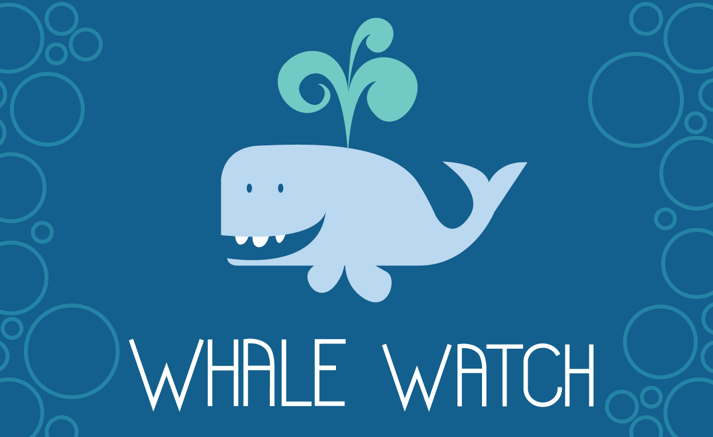

WHALE WATCH WEB APP
The Whale Museum of Washington keeps extensive records and files reports through a hotline of whales that people spot up and down the pacific and specifically the northwest coast. The Whale Watch Web App was created with the intention of allowing whale spotting enthusiasts "surf" the database and check for sightings of different species in their selected region.